From observation to action: social information foraging, dopamine timing and causal credit assignment
Animals do not simply copy others. They learn when social information is worth sampling, convert what they see into their own action, and assign credit to social outcomes. VTA dopamine expresses these computations in sequence, while the same computational principles recur across current external tests in mouse, rat, macaque, marmoset and human.
Full SLM beats every classical RL baseline under the restricted contract; SLM+choice persistence recovers 96.9% of the Current→full-history-MLP gain.
Nine current external evidence families recover source identity, multiscale state, active sampling, value/credit or neural links.
VTA dopamine expresses the sampling policy early, learner-linked APE in the middle, and reward/belief update after outcome.
JAWS lowers Active-belief updating in all 10 animals within-session and in 9/10 animals at the session scale; both JAWS cohorts replicate the direction.
Feed hazard rises within 3 s after observing demonstrator feeding; the state-residualized increase is +6.09 pp.
A generic GRU agent becomes better predicted by explicit SLM coordinates in every fold × seed × reward run.
This page keeps the major behavioral, computational, neural, causal and generative results together so the full SOE mechanism can be inspected from one place. Main evidence panels use SOE project data.
SOE is learned
SRI rises in 35/40 animals; live social input, visual access and familiarity all matter.
Observation becomes efficient
Learning changes conversion of observation into feeding more than it changes gross observation rate.
Social value is adaptive
Social information is most useful when current self-state leaves room for external evidence to alter policy.
SLM reaches the behavioral ceiling with mechanism
The SLM family combines near-ceiling prediction with identifiable policy, APE, RPE and social-credit variables that can be tested neurally and causally.
Learning has multiple timescales
Immediate outcome-conditioned switching, minute-scale memory and a transient cross-day prior coexist.
Observed content drives Feed
Demonstrator feeding during the preceding Observe predicts a short-latency increase in native Feed hazard.
SLM is predictive and generative
Mouse-derived SLM variables fit held-out behavior and regenerate trajectory, local strategy and behavioral-state organization in closed loop.
VTA expresses SLM computations in sequence
Only SLM is positive and significant across all three prespecified dopamine epochs: Early policy, Middle APE and Post update.
Information access and dopamine credit are separable
Visual Block reduces access to useful social content; VTA inhibition selectively disrupts Active social-reward credit across acute, within-session and session-scale tests.
SOE experience generalizes
Prior SOE training alters later novel-food engagement and observational-fear organization.
SLM principles recur across species
Current external tests span five species and recover complementary components: source identity, multiscale history, active sampling, policy/value and neural-state links.
SOE is acquired across the full cohort and successful learning improves observation-to-action conversion
Across all 40 animals, SRI rises from early to late training in 35/40 animals. Learners are defined from late-training SRI for the mechanistic modeling contract; the conversion comparison is therefore shown separately rather than using 27/27 learner improvement as the acquisition headline.
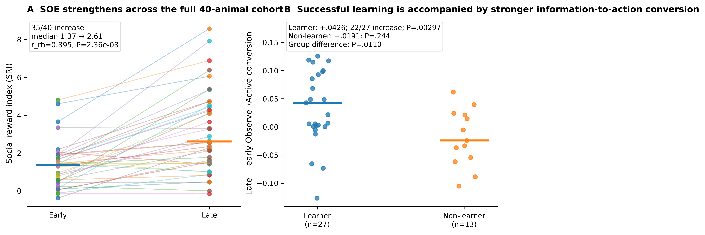
Swipe the table horizontally for all columns →
Foundational behavioral controls
| Discovery | Result | Interpretation | Evidence type |
|---|---|---|---|
| Acquisition | strict learner SRI ≈1.07→4.58; older n=13 lineage .67±.34→2.82±.44, P<.001 | Social coordination strengthens across training. | learner cohort |
| Live social input | Live demonstrator > simulated demonstrator; simulated SRI ≈.499±.258, n=13, P<.001. | Live-social interaction carries the effective teaching signal. | live-social control |
| Visual access | opaque barrier ≈69% reduction; current VB 3.67→1.08, 23/25 lower | successful social coordination requires visual information | historical + current visual-access evidence |
| Familiarity | unfamiliar partner reduces SRI ≈44%, n=11, P<.05 | social evidence is weighted by partner identity/familiarity | historical familiarity evidence |
| Observation phenotype | Socially directed observation rises with training. | Learning refines selective social observation. | training-dependent observation |
| Conversion | Learner Observe→Feed ≈.431→.641; learning progress β≈+.126. | Successful learners become more efficient at using sampled social information. | learner cohort |
Additional behavioral analyses
Active orienting carries predictive social information
Demonstrator feeding/spout state is highly predictive, but observer-side head direction, facing, angular velocity, social turn and social gaze nearly match the all-feature classifier. Social gaze is the strongest single observer-side feature in the manuscript lineage.
Learning reweights an existing behavioral manifold
Successful active-reward bouts are preceded by distinct states. The global manifold remains broadly stable, while occupancy shifts toward socially informative motifs with training.
Conversion progress tracks learning
Conversion progress correlates with ΔSRI (ρ≈.426, P=.0086), directly linking successful information-to-action transfer to behavioral learning.
Social information has state-dependent decision value
Social evidence is valued selectively. Held-out predictive value changes with learning stage and with the observer’s current behavioral state, revealing when external information can most strongly alter policy.
Median +0.00365 nats/decision; rrb=.725; P=.000268.
Median late−early = −0.00378 nats/decision; rrb=−.619; P=.00194.
Social information is most useful when the observer is farther from its own spout.
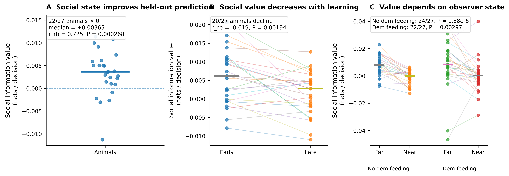
Multi-timescale memory recovered before the final SLM
The behavior contains fast rules, minute-scale memory and a transient cross-day state
Independent analyses reveal three separable timescales in the same behavior: immediate outcome-sensitive policy changes, multi-event history over minutes, and a retained cross-day state concentrated near the beginning of a new session.
Active/Passive outcomes increase subsequent stopping relative to Unrewarded. Active−Unrewarded stopping reaches +11.6 pp at events 21–50; Passive reaches +17.6 pp.
Selected γ=.95–.97 corresponds to roughly 4.5–7.5 min and outperforms simple run length or elapsed time.
Chronological day order ranks 1/501 against day shuffles (P=.001996); a retained prior improves 29/40 animals (P=.0125) and fades by ~event 50.
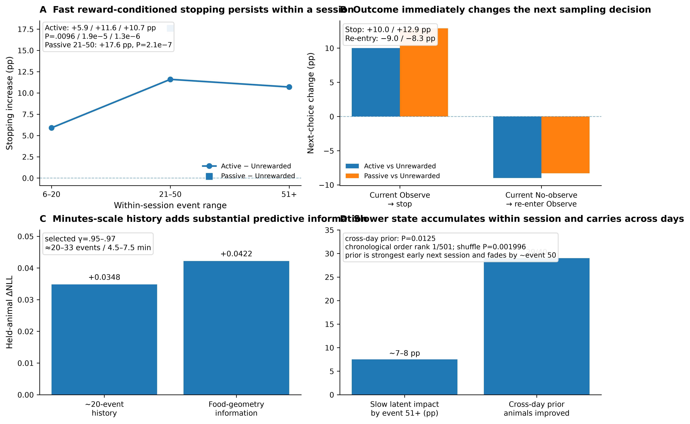
When currently observing, Active and Passive outcomes increase stopping by about +10.0 and +12.9 pp versus Unrewarded. When currently not observing, they reduce re-entry by about 9.0 and 8.3 pp.
Selected γ=.95–.97 corresponds to roughly 4.5–7.5 min. A ~20-event observation/action history adds ΔNLL=+.0348 beyond visible state/context.
A retained prior improves 29/40 animals (P=.0125). Chronological day order ranks 1/501 against within-animal whole-day shuffles (P=.001996), with the prior strongest early in the next session.
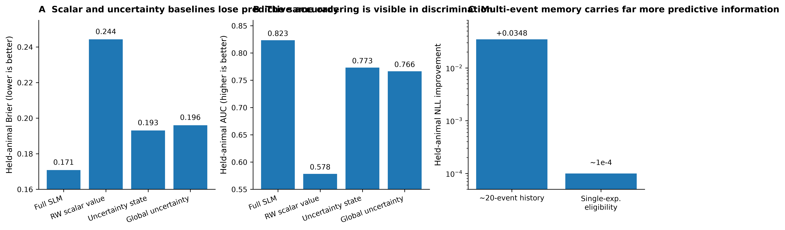
Learning is supported by fast, within-session and cross-day memory components
Observe→Active conversion increases in 22/27 learners; r_rb=.635, P=.00297.
Learner-linked APE coupling is significant in VTA; exact P=.0416.
SLM reaches the black-box predictive ceiling with interpretable, identifiable and generative variables
Full SLM strongly outperforms classical RL and compact state heuristics. Adding one generic choice-persistence term produces a parsimonious head that beats Current+choice-kernel and TinyRNN while becoming statistically indistinguishable from the full-history MLP, without giving up the latent variables used by VTA, JAWS and the artificial agent.
A common metric set makes the behavioral comparison explicit
Behavioral prediction alone leaves several high-capacity models close. The VTA section tests whether those behaviorally competitive models also reproduce the temporal neural sequence.
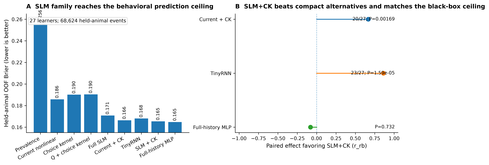
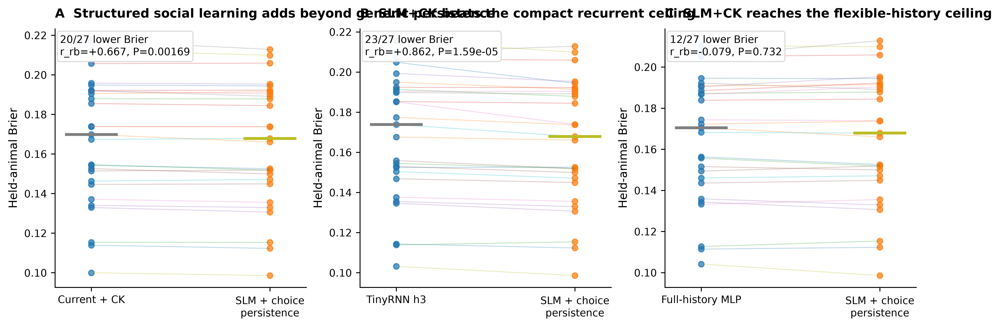
All rows use the same held-animal cohort. The paired effect is computed on animal-level Brier improvement relative to the Current nonlinear state model; positive rrb means lower Brier.
| Model | Brier ↓ | AUC ↑ | rrb vs Current nonlinear ↑ | Paired P |
|---|---|---|---|---|
| Full SLM | 0.170824 | 0.823320 | 0.937 | 1.04e-06 |
| SLM + choice persistence | 0.165411 | 0.834084 | 1.000 | 1.49e-08 |
| Current + Choice-kernel | 0.166401 | 0.832245 | 1.000 | 1.49e-08 |
| TinyRNN h3 | 0.168031 | 0.828605 | 0.968 | 2.09e-07 |
| Current + full-history MLP | 0.164749 | 0.835124 | 1.000 | 1.49e-08 |
| History MLP + formal-all | 0.163722 | 0.837365 | 1.000 | 1.49e-08 |
SLM beats RW, WSLS, Q-active, Q-all, asymmetric-Q, forgetting-Q, choice-kernel and Q+choice-kernel under the restricted baseline contract; rrb=1, P=1.49×10⁻⁸.
SLM+choice persistence recovers 96.9% of Current→full-history-MLP improvement and 92.4% of Current→best-history-model improvement.
Early Actor-policy: r_rb=.810, one-sided exact P=.0469; Middle APE×learning: ρ=.667, P=.0416; Post Actor-Critic RPE: r_rb=.867, P=.0195; Post belief update: r_rb=.956, P=.00586.
SLM+choice persistence reaches the flexible-history prediction ceiling
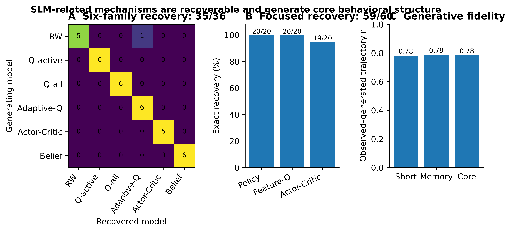
Actor-Critic, outcome-belief, Q-active, Q-all and adaptive-Q each recover 6/6; only one RW replicate is confused with adaptive-Q.
Feature-Q 20/20, policy 20/20 and state-value actor 19/20 under the 27-learner recursively generated conditional contract.
Social observation drives feeding through content-specific conversion
Native Feed is predicted strongly by the observer’s own state. Social information adds a second, content-specific bridge: what the demonstrator was doing at the sampled moment changes the observer’s near-term Feed probability beyond current state and simple observation recency.
Observer-only pre-action state; both sessions held out together by animal, n=40.
Feed AUC improves with current social/dyadic state; rrb=.407, P=.0120.
Feed hazard within 3 s after observing demonstrator feeding versus observing no feeding; P=.0377.
Residual acute Feed hazard after frozen self + current-social prediction; P=.0445.
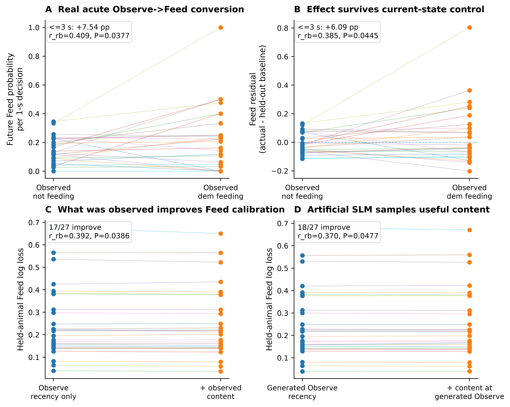
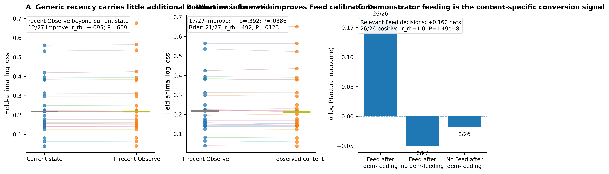
Why the Feed bridge is a separate controller
Adding simple recency beyond current state does not improve held-animal Feed log loss as a group (r_rb=−.095, P=.669).
Observed content beyond recency improves Brier in 21/27 animals (r_rb=.492, P=.0123) and log loss in 17/27 (r_rb=.392, P=.0386).
On Feed decisions after observing demonstrator feeding, the dem-feed content term adds +.160 nats on average; r_rb=1, P=1.49×10⁻⁸.
Carrying the event-level SLM scalar state directly into the native Feed controller produces essentially zero paired AUC gain (r_rb=.0024, P=.497), supporting controller separation.
A mouse-derived SLM becomes an autonomous agent, and a generic GRU converges on its coordinates
The mouse-derived Artificial SLM closes the loop between Observe choice, generated social outcome and recursive state updates. A separately trained generic GRU actor-critic receives no privileged SLM latents, yet explicit SLM coordinates explain its learned policy in every fold × seed × reward run.
The fitted SLM regenerates broad learner trajectories without replaying held-out outcomes.
Full SLM gives the strongest current real-versus-generated local strategy kernel and the lowest kernel RMSE among the benchmarked agents.
Autonomous Artificial SLM preserves substantial behavioral-state organization; mean JS=.0390.
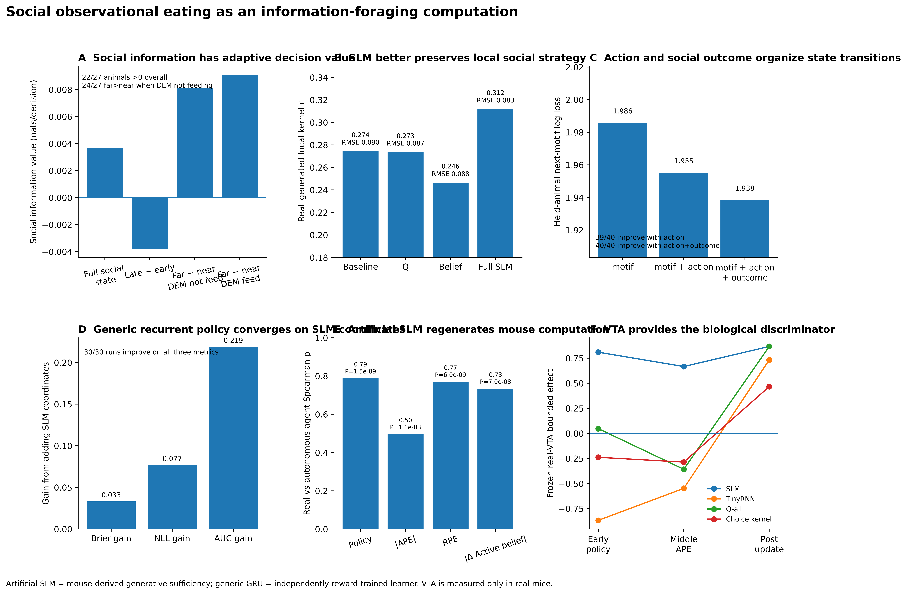
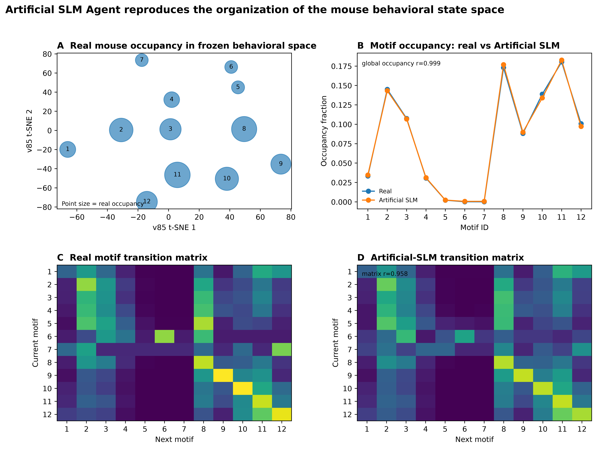
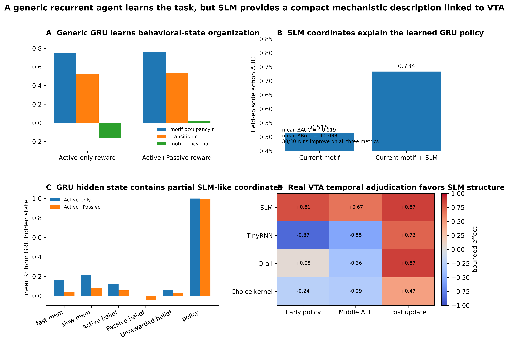
Adding explicit SLM coordinates improves Brier, NLL and AUC in all 30/30 runs, showing convergence of a generic artificial learner onto the same compact policy coordinates.
P=1.50×10⁻⁹ across animals; RPE ρ=.771 and |ΔActive belief| ρ=.734.
Auto-content beats auto-recency for Feed log loss (P=.0477) and Brier (P=.0346).
VTA dopamine expresses SLM policy, action-prediction and update signals in sequence
Aggregate reward-aligned dopamine can be captured by several update-like models. The informative result appears after resolving the episode in time: Early policy, Middle learner-linked APE and Post reward/belief update form a three-stage sequence, and only SLM is positive and significant on all three prespecified axes.
Descriptive VTA observations
Demonstrator state is represented in observer VTA
Observer DA is elevated when the demonstrator occupies the food zone and is lower outside it. Demonstrator feeding/spatial state, posture, proximity, velocity and turning all contribute; coupling is stronger in learners.
Active social gaze evokes dopamine
Observer-initiated social gaze evokes VTA DA, exceeds demonstrator-gaze responses, and precedes larger DA during active-reward eating.
Temporal SLM variables adjudicate mechanism
The newer held-block tests refine those descriptive effects into separable policy, APE and post-outcome update computations.
sampling policy
learner-linked action-policy error
reward prediction error
social belief update
credit carried forward
SLM belief gives median +1.75% MSE gain (8/9, r_rb=.867, P=.0195); UCL-style RPE gives +2.04% (8/9, r_rb=.956, P=.00781). Aggregate reward DA therefore motivates temporal decomposition rather than model selection by amplitude alone.
Early Actor-policy r_rb=.810, one-sided exact Wilcoxon P=.0469 (n=6; 5/6 positive); Middle APE×learning ρ=.667, P=.0416; Post Actor-Critic RPE r_rb=.867, P=.0195.
TinyRNN: Early −.867 (P=.0195), Middle −.548 (P=.924), Post +.733 (P=.0547). History MLP: Early −.378 (P=.359), Middle +.024 (P=.488), Post −.911 (P=.0117). Neither reproduces the three-epoch SLM sequence.
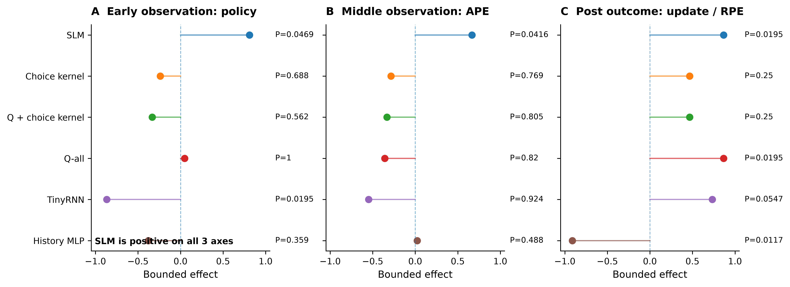
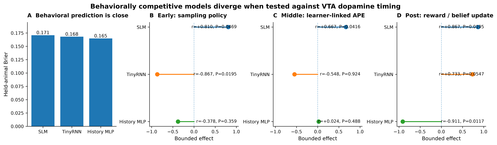
Actor-policy gain is positive in 5/6 animals; r_rb=.810. The primary P=.0469 is the pre-specified one-sided exact Wilcoxon signed-rank test.
APE coupling tracks learning in the middle observation window.
Actor-Critic RPE: r_rb=.867, P=.0195; outcome-belief update: r_rb=.956, P=.00586.
SOE is organized by coupled social-sampling and feeding policies
The convergent architecture is hierarchical. One policy determines when social information is worth sampling; a native feeding policy converts informative sampled content into food-directed action; reward outcomes update belief/value states that reorganize future sampling.
Visual Block reduces SRI and Observe→Active efficacy while gross social observation remains available.
Current state, fast outcome history, belief/value and slow prior determine when observation has the highest decision value.
Observing demonstrator feeding predicts an acute excess Feed hazard beyond observer-state prediction.
Contingent VTA inhibition selectively reduces Active social-reward belief updating and successful conversion while gross sampling is preserved.
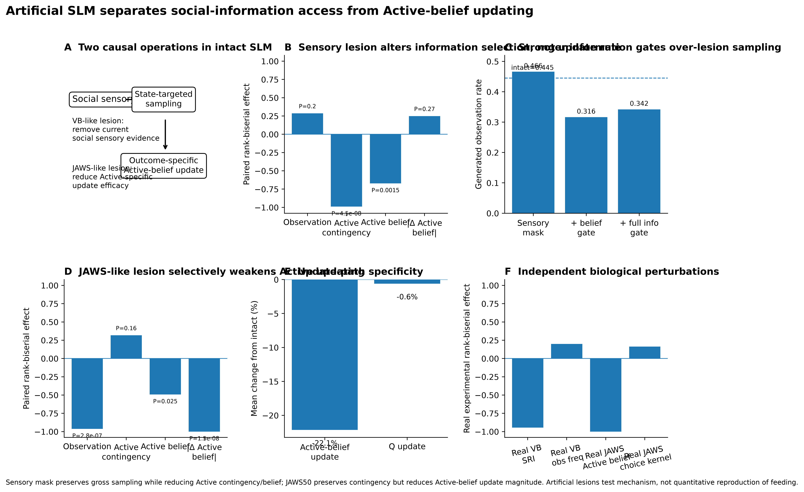
Evidence for the two-policy architecture
Content specificity. Demonstrator feeding at the preceding Observe improves conditional Feed calibration beyond current observer state.
Controller separation. SLM coordinates organize Observe sampling and social credit, while the native Feed policy is dominated by self-state plus a short-lived content-specific eligibility signal.
Acute conversion. The real mouse shows a +7.54 percentage-point Feed-hazard increase within 3 s after observing demonstrator feeding.
Autonomous sampling. Artificial-SLM Observe choices preferentially sample behaviorally useful social content.
Visual information access and dopamine-dependent reward credit are separable operations
Visual Block and JAWS converge on reduced successful Observe→Active conversion through different computational operations: visual-information access versus VTA-dependent reward-credit updating. Gross social observation remains broadly preserved.
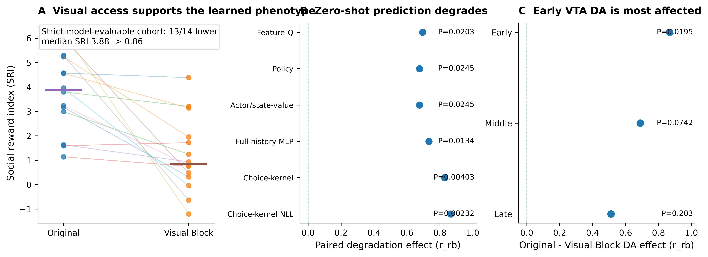
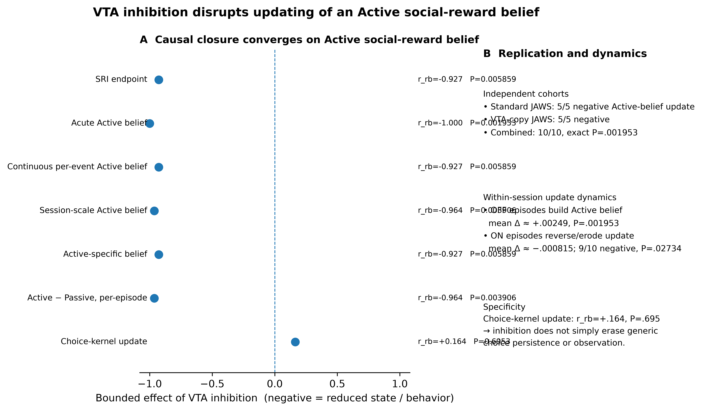
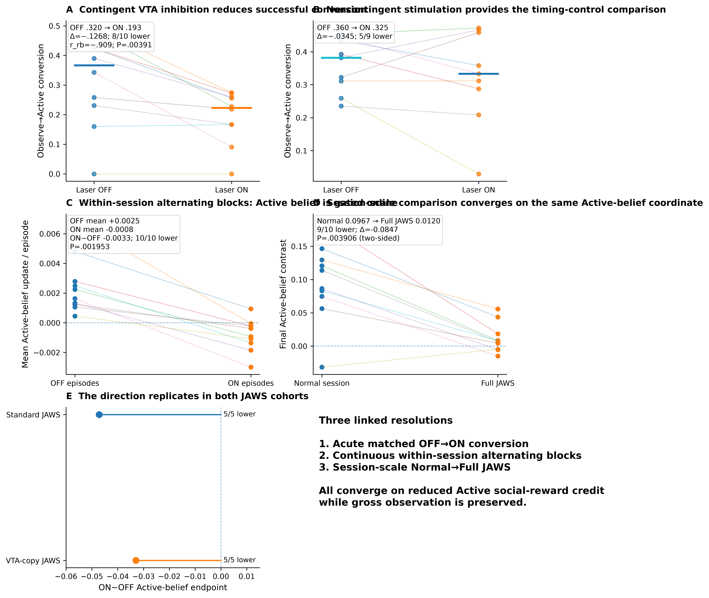
| Test | Primary effect | Gross observation | Computational interpretation |
|---|---|---|---|
| Visual Block | SRI ≈3.67→1.08; 23/25 lower | gross observation preserved | visual-information access / efficacy |
| VB Observe→Active | .2830→.2137; P=.00427 | observation-rate change P=.0863 | reduced information-to-action conversion |
| JAWS contingent | SRI 1.880→.786; r_rb=−.927; P=.00586 | gross observation preserved | VTA-dependent reward-credit teaching |
| JAWS Observe→Active | .3202→.1933; P=.003906 | observation fraction Δ=+.044; P=.625 | reduced successful conversion |
| JAWS Active belief | acute r_rb=−1.000, P=.00195; continuous −.927, P=.00586; session −.964, P=.00391 | choice-kernel update r_rb=+.164; P=.695 | Active social-reward belief is the coordinate selectively disrupted by VTA inhibition |
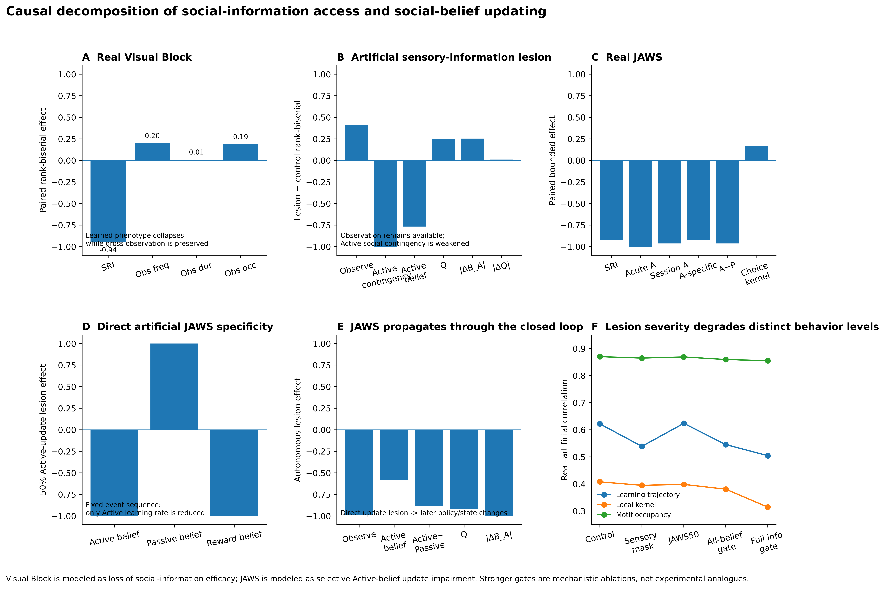
Observe→Active conversion falls from .320 to .193; 8/10 lower, r_rb=−.909, P=.00391.
The matched noncontingent comparison is .360→.325, providing the timing-control reference in the same behavioral metric.
Continuous-state replay gives Active-belief ON−OFF=−.003305 per episode; all 10 animals are lower, P=.001953.
Final Active-belief contrast falls from .0967 to .0120; Δ=−.0847, two-sided P=.003906. Standard and VTA-copy cohorts each show 5/5 lower direction.
Artificial lesion correspondence
Visual Block dopamine
SOE experience reorganizes later use of social information
Two source-rebuilt assays show transfer beyond the trained feeding contingency. Observational fear is resolved into late-cue immobility, shock-locked reactivity, sustained shock-focused monitoring and D1→D2 attenuation; social-related novelty-suppressed feeding (SAFN) shows faster and more sustained engagement with unfamiliar food.
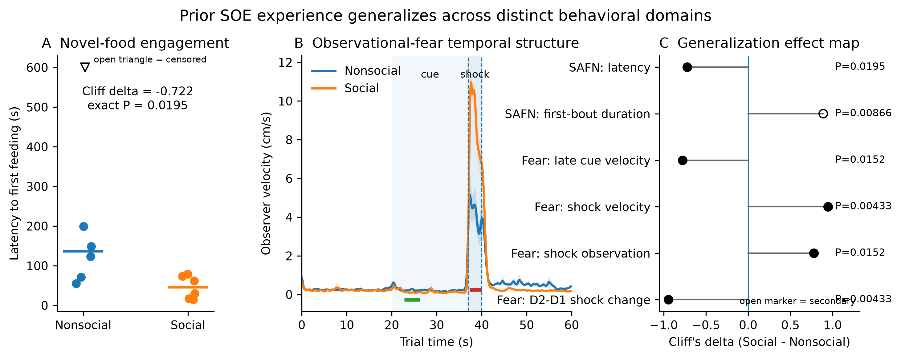
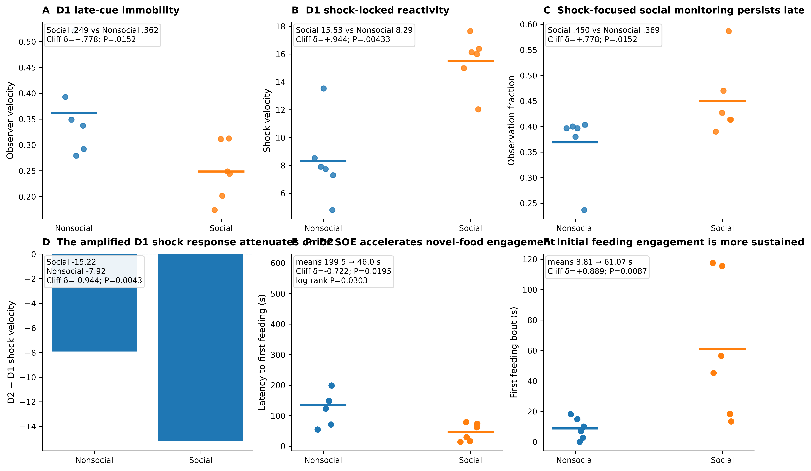
Late cue velocity: Cliff δ=−.778, P=.0152. Shock velocity: δ=+.944, P=.00433. Late shock observation: δ=+.778, P=.0152. Shock angular-velocity change also increases (δ=+.833, P=.00866).
Shock-velocity change is larger after prior SOE training (Cliff δ=−.944, P=.00433); shock angular-velocity change gives δ=−.833, P=.0130.
Social-trained animals engage unfamiliar food earlier: Cliff δ=−.722, exact P=.01948; permutation log-rank P=.03030; feeding occurs in 6/6 vs 5/6 animals.
Initial feeding engagement is more sustained after prior SOE training: Cliff δ=+.889, P=.00866.
SLM principles recur across species when tested with the same unit-level benchmark logic
The section now follows one rule across datasets: show the independent units first, then show robustness across metrics or model ablations, and only then summarize across datasets. This makes the generalization claim auditable at the mouse, rat, subject, independent-sequence, date-cluster, experiment or neuron level used by each analysis.
The raw unit comes first; the forest plot is only the summary
Mouse, rat, subject, independent behavior sequence, independent date cluster or independent experiment—exactly the unit used for inference.
The P value printed in each panel refers to the named baseline-versus-structured comparison, not to the flexible ceiling unless explicitly stated.
For pre-specified directional model-improvement tests, the section uses an exact one-sided paired Wilcoxon signed-rank test and reports paired rank-biserial effect size.
RNN/HistGB/RF references show how much of the available predictive gain the structured state recovers; they are not silently substituted into the primary hypothesis test.
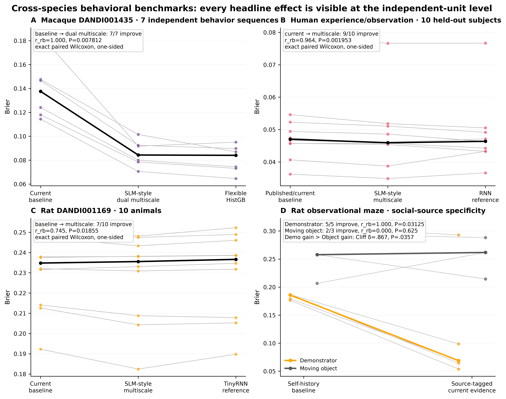
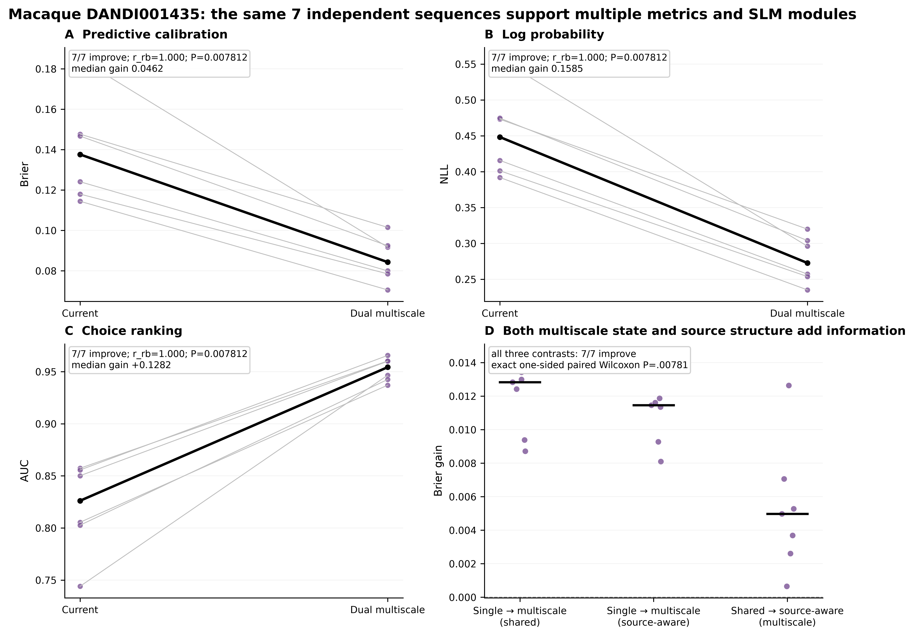
Rat observational maze: the same source effect appears at animal, session and scoring-rule levels
The rat dataset is especially useful because a conspecific demonstrator can be compared with a physically present moving-object source.
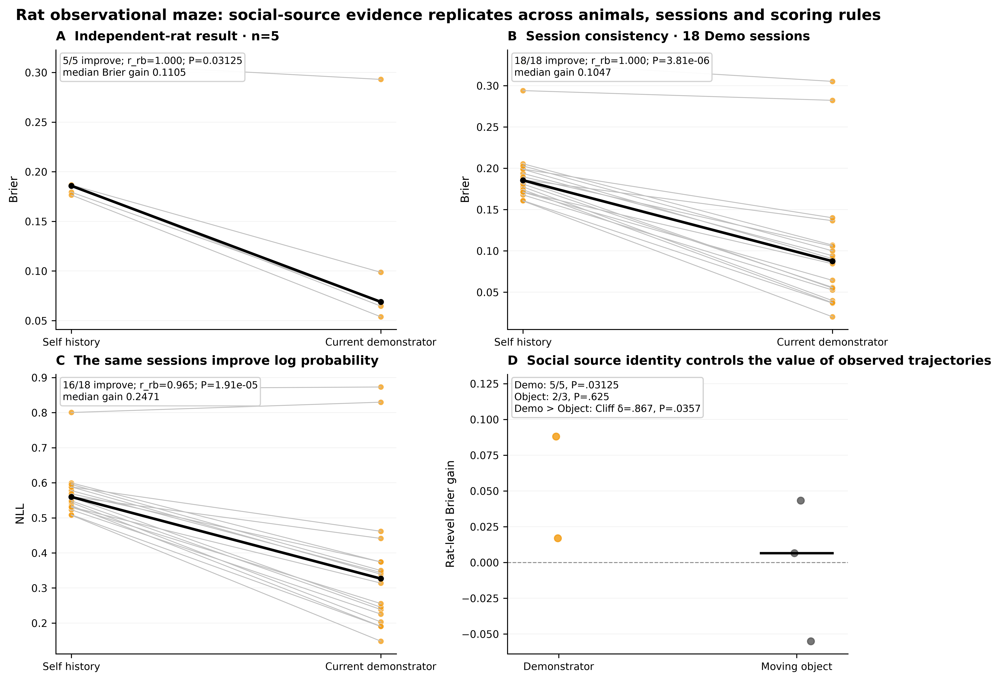
A state variable is useful only when the task makes that variable informative
This non-social mouse dataset tests a generalization of the state architecture rather than social information itself.
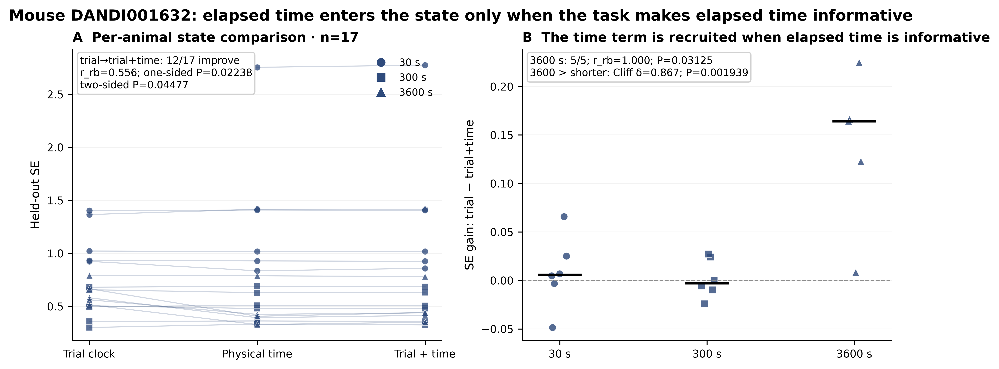
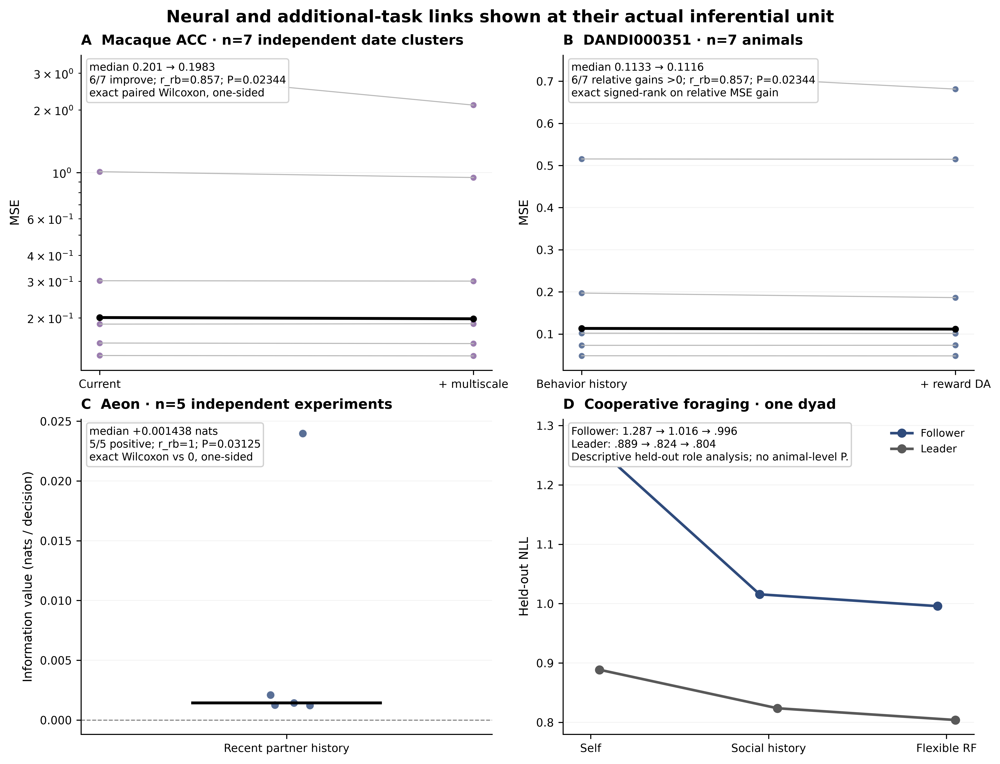
Independent primate datasets recover sampling, accumulation and source-tagged update variables
These analyses use the source data at the level available in each publication—date clusters, neurons, model coefficients or repeated units—rather than collapsing them to one headline value.
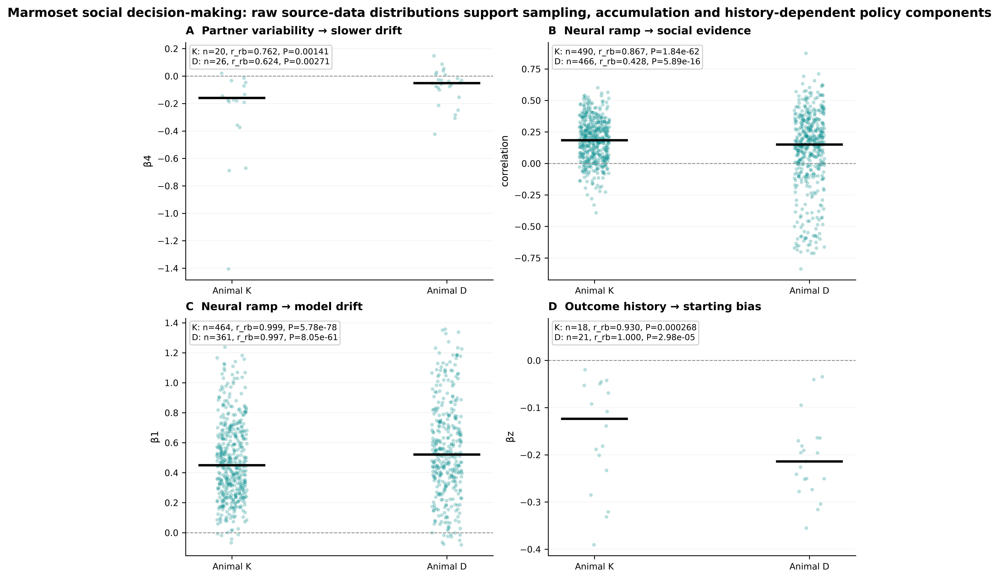
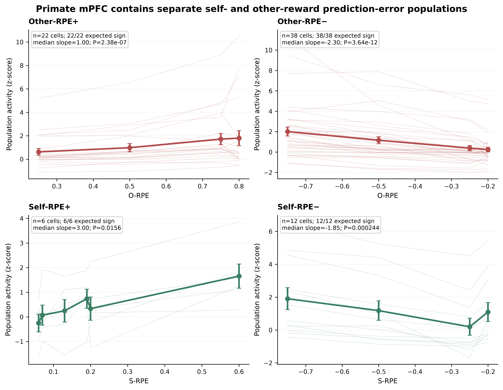
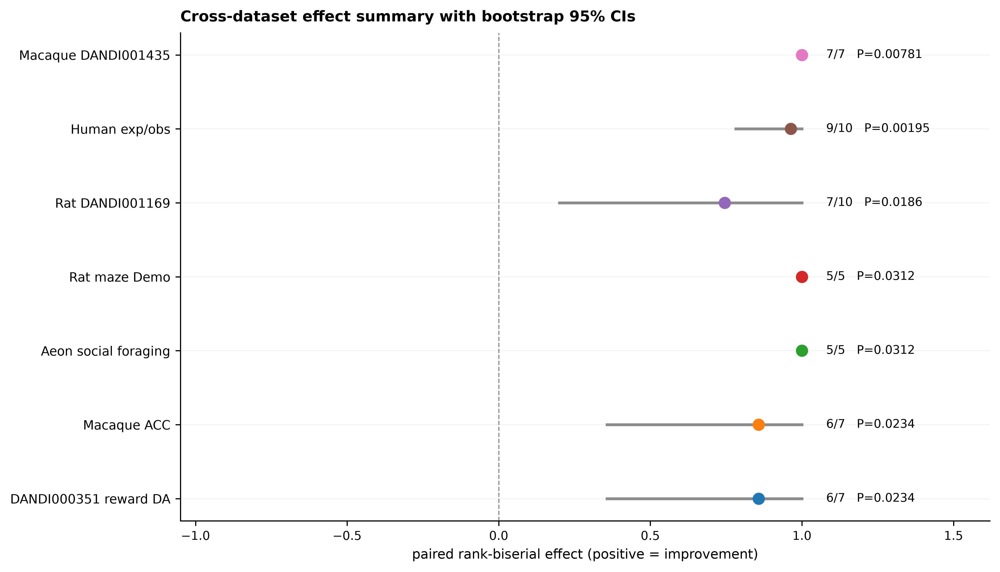
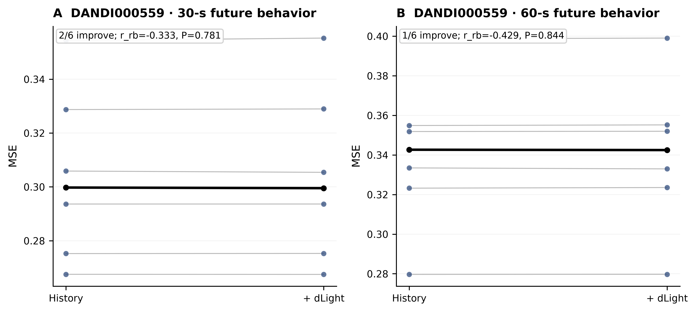
The recurring result is a computation, not an identical feature vector
Rat demonstrator evidence beats a moving-object source; macaque source-aware state also improves held-out behavior.
History at multiple timescales repeatedly improves held-out prediction, with the size of the gain visible for each unit in Cross-species Fig. 1.
Additional neural datasets connect structured state/evidence to ACC, marmoset dmPFC and reward-DA-dependent later behavior.
Where same-contract flexible references exist, the structured model often captures most of the available gain; raw per-unit panels remain the primary evidence.
Complete registry across mouse, rat, macaque, marmoset and human; social versus non-social information sources are labeled explicitly.
Seven current contracts contain a frozen baseline, structured SLM-style state and a flexible reference under the same held-out evaluation.
Across those seven contracts, structured state recovers a median 93% of the baseline→flexible-reference improvement; this is a descriptive cross-contract summary, not a pooled inferential meta-effect.
Dual source-aware multiscale state reduces Brier in all seven unique behavior sequences; median relative reduction 37.0%, r_rb=1, P=.00781.
Pre-trial shared multiscale state improves held-out ACC encoding in six of seven dependence-aware date clusters; r_rb=.857, P=.0234.
Held-subject multiscale history improves in 9/10 subjects; r_rb=.964, P=.00391.
Current demonstrator source improves held-out observer choice in all five rats; r_rb=1, P=.03125; demonstrator gain exceeds moving-object gain, Cliff δ=.867, P=.0357.
Explicit multiscale event state improves in 7/10 rats; r_rb=.745, one-sided P=.0186.
Recent partner-history value is positive in all five independent experiments; r_rb=1, P=.03125.
Published MAIRL shows partner distance significant in 6/6 followers versus 3/6 leaders and partner angle in 6/6 versus 2/6; proximal partner value P=7.7×10⁻⁶.
In DANDI000351, reward-evoked DA improves held-out prediction of later licking beyond behavioral history in 6/7 animals; r_rb=.857, P=.0234.
Macaque source-aware state improves behavior; rat demonstrator information beats a moving-object source (Cliff δ=.867, P=.0357); macaque self/other RPE populations carry source-tagged updates.
SOE, macaque behavior/ACC, human, rat DANDI001169 and Aeon each show that history or state at more than one timescale contributes beyond immediate variables.
Rat observational choice, cooperative foraging and marmoset gaze-gated evidence each link social sampling to later choice/value computations.
Macaque ACC encodes multiscale state; marmoset dmPFC links gaze-gated evidence to accumulation; primate mPFC contains separate self/other RPE populations; mouse reward DA adds prospective behavioral information.
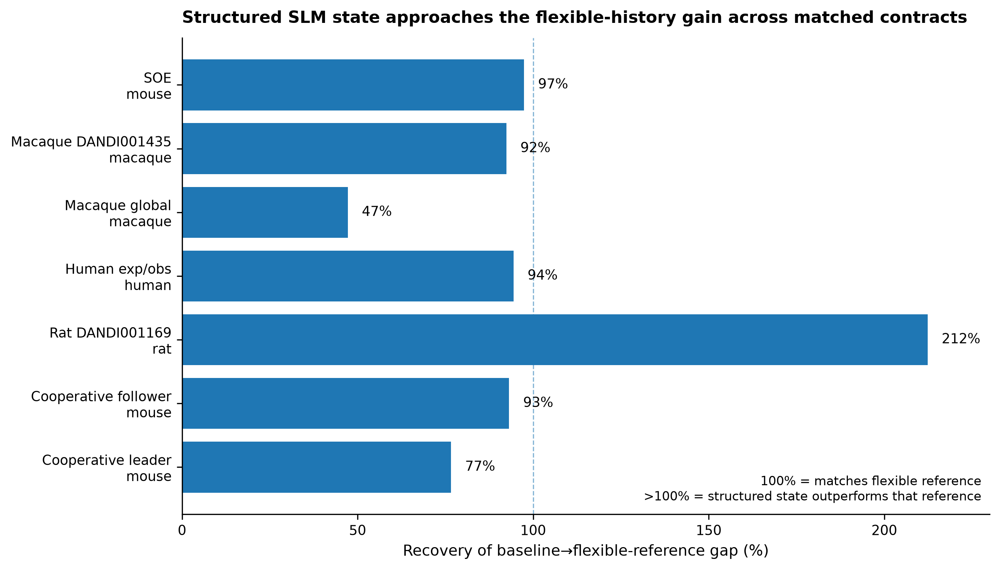
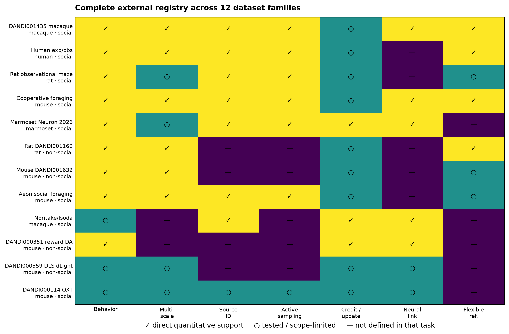
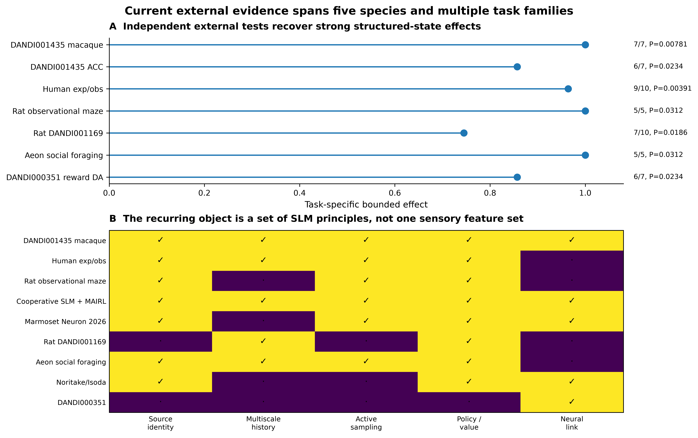
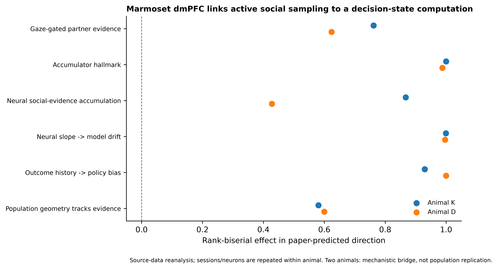
Open the exact analysis authority behind the page
The visual page is a navigation layer. Numeric authority remains in the versioned checkpoint, analysis master, focused mechanistic notes and downloadable CSV tables below.
Latest project-wide analysis authority, statistics, provenance and reproducibility records.
Comprehensive analysis/results authority.
Strict future Feed contract and observed-content bridge.
Generated sampling schedule tested against native Feed conversion.
Generative sufficiency, recurrent convergence and biological grounding.
Visual Block and JAWS computational lesions.
Canonical held-animal behavioral model table.
Audited behavior, Early/Middle/Post DA, JAWS, recovery and generation registry.
35/36 six-family recovery and 59/60 focused recovery authority.
Recovered early phenotype, social gaze, motifs, learning and historical controls.
Frozen Early/Middle/Post model evidence.
Project-wide bounded effects and inferential units.
Brier, AUC, paired rank-biserial effect and paired P on the same held-animal cohort.
Source values for the structured-state comparison figure.
Fast stopping, stop/re-entry, 20–33-event history, slow latent and cross-day prior statistics.
Contingent, noncontingent, continuous within-session, session-scale and cohort-replication statistics.
Detailed generalization endpoints used by the expanded figure.
Full-cohort SRI acquisition statistic used in the revised phenotype panel.
Animal-level SLM+choice-persistence comparisons against Current+CK, TinyRNN and full-history MLP.
Task-specific bounded effects and exact P values used in the cross-species evidence plot.
Dataset × SLM-principle map used in the cross-species evidence matrix.
Corrected Early Actor-policy effect and the frozen Early/Middle/Post comparator statistics.
Baseline, structured-state and flexible-reference losses for contracts with all three models available.
All 12 external dataset families with social/non-social source type and principle-level evidence coverage.
Exact comparison, independent-unit n, wins, paired rank-biserial effect and P for every unit-level panel.
Dataset-level baseline and structured median metrics used to annotate the raw benchmark panels.
Effect sizes, bootstrap 95% CIs, wins, n and exact P values used in the cross-dataset forest plot.
Seven-sequence Brier/NLL/AUC and module-ablation statistics for DANDI001435.
Rat-level and session-level source-evidence effects across Brier, NLL and accuracy.
Per-animal trial-clock versus trial+time statistics by reward-spacing group.
Independent-unit counts for the raw marmoset mechanistic panels.
Current page build: 2026-10-04 · mobile-audited scientific working page.